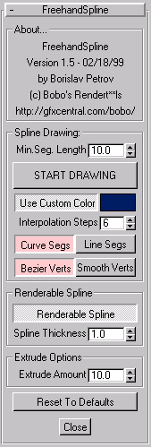

MaxScript Release 1.5 Source (2/18/1999) MAX 2.5 ONLY
Copyright (c) 1999 by Borislav Petrov, Bobo's Rendert**ls.
SHORT DESCRIPTION
FreehandSpline (FHS) lets you draw freeform splines
with the mouse or tablet similar to drawing with a pencil.
It lets you quickly create complex shapes with control
over form and quality.
(The image above was created in just about 20 seconds
without any additional tweaking of the splines)
HOW DOES IT WORK?
FHS converts the mouse world coordinates into
spline knot (vertex) points with user-defined precision.
When the distance of mouse to the last
point drawn exceeds the user-specified Min.Segment Length,
the next point is generated. FHS allows
for multiple splines in a single shape, open/closed splines, curve/line
segments, renderable splines, and extruded or meshed contours.
FEATURES AND USAGE

Version 1.5 (2/18/99)
NEW: Implemented Bezier Vertex type as option.
NOTE that the splines are drawn as usual, but if the "Bezier Verts" checkbutton is pressed, the vertex types
will be converted to Beziers AFTER the curve has been finished. This means that default
tangents will be generated based on the Curve vertices, and you cannot mix Bezier and Smooth
types while drawing (but you can edit them afterwards in Modify tab/Editable Spline).
This function lets you go straight to Sub-Object level and edit tangents WITHOUT an additional step of converting
vertex types manually.
Version 1.4 (2/18/99)
NEW: Added the option to select between CURVE
and LINE segments.
By default, you can draw everything with curve
segments with user-defined Interpolation steps.
You can switch between Curve and Line modes
while drawing by pressing the [k] and [l] buttons, or by pressing [p] to
pause and checking the respective buttons in the utility's rollout.
The Interpolation Steps value corresponds
to the Interpolation Steps in the Editable Spline object. It is used to
specify the internal divisions between two vertices. If you set the value
to 0 (right-click on spinner arrows), the splines are drawn as in the older
Versions of FreehandSpline. Values in the Utility are limited to 10.
After drawing a shape, and before starting
a new shape, you can change the Interpolation Steps interactively for the
last shape created. (But you can edit it later in Modify tab, too)
You can convert a FreehandSpline Shape to
a Bezier curve by just going to Modify/Sub-Object/Vertex, selecting all
vertices, right-clicking them and changing the Type to Bezier. I will probably
implement Bezier splines in the next Version.
NEW: All settings except the user color are
saved on closing the utility, and are loaded next time you start. The settings
a written to the file "FHSPLINE.INI" in your Scripts directory.
There is a new [Reset To Defaults] button
to return to the default state.
In Version 1.4, if you press [START DRAWING]
and right-click immediately to cancel, NO SPLINE will be created. In older
versions, there was a "null" spline with a name but no segments.
Version 1.3 (2/18/99)
Start the script in MAX 2.5. In MAX 2.0, the
script will disable itself and will refuse to run.
By default, the Min.Seg.Length is set to 10.0.
It defines the min. distance between two vertices in the spline. Higher
values give lower quality - longer linear segments, fewer vertices.
Press the [START DRAWING] button.
Click in the Top or Perspective viewport to
start drawing a spline
Move the mouse - a spline trail will appear
behind the mouse, following each mouse movement.
The MAXScript Listener will report the current
drawing mode and provide help with the available commands.
Press the left or right mouse button to END
drawing. Optionally, you may press any other keyboard key not assigned
a command.
Press the [d] key to take Pen Up. This will
finish the drawing of the current spline, and will let you move the mouse
normally around without drawing. You can change settings like the Min.Seg.
Length or Extrude Amount. With the next mouse click in the viewport, a
NEW SPLINE in the SAME SHAPE will be created. The previous spline will
remain open.
Press the [p] key to take the Pen Up. This
will just pause the drawing of the current spline, and will let you change
settings in the control panel before continuing with the generation of
the SAME SPLINE from the last point drawn.
Press the [c] key to close the current spline
in the shape. With the next klick, a NEW SPLINE in the SAME SHAPE will
be started. This command is similar to [d], but it closes the previous
spline before starting another.
Press the [SPACE BAR] to close the last spline
and END drawing of the shape.
Press [m] to close the last spline drawn,
and convert the shape to a flat mesh. If there are open splines in the
shape, you will be prompted to confirm the operation. The utility uses
a Normal modfier to force mesh conversion. You can remove the modfier from
the stack to revert to EditableSpline anytime.
Press [e] to close the last spline drawn and
extrude the shape at the amount set in the Extrude Options/Extrude Amount.
No check for closed shapes will be done.
The whole drawing operation can be undone
with a single Undo button click.
By default, all shapes will be made renderable
and will receive the Spline Thickness set in the utility panel.
By default, all shapes will use the custom
color set in the utility panel. You can change the color or uncheck the
checkbox to let the spline use MAX's default wirecolor assignments.
All splines will have linear segments and
Smooth vertex settings. You can edit the resulting splines as usual.
Every shape will have a unique name with the
base prefix "FHS_Shape" followed by a number.
BUGS:
Version 1.3 fixes a problem with the spline topology.
All splines in a shape except the first used to have the first vertex doubled.
This led to some strange behaviour with the Outline command.
Known limitation: Currently, splines created in the
front and side views will not extrude correctly because the local Z axis
of each vertex is aligned to the World's Z.
Known limitation: The MAXScript Listener MUST be open
for the keyboard commands to be interpreted correctly.
Known limitation: The mouse does not report valid world
position values when over a floating window (like the Listener)